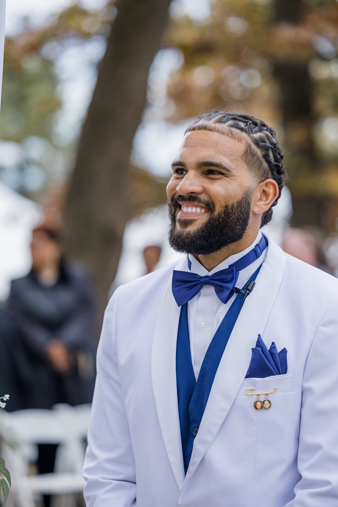

About
Who I Am
I am a game designer, Unity developer, UI/UX designer, and web developer based in Florida. I am finishing my Bachelor of Science in Web & Digital Design at the University of Maryland Global Campus in December 2026, and I am the founder of TroubleCub Games, an independent game studio I built around a vision to create unique experiences through gameplay.
My background spans four disciplines: game development, immersive experience design, UI/UX, and web design. I worked on small projects as a hobbyist, published an indie game demo that gathered real player feedback, and I am currently in pre-production on my flagship 3D action RPG, Two Little Wounds.
I am not just building a portfolio. I am building a studio, a universe, and a creative career built to last.
Download ResumeSkills & Tools
Unity Engine
C# / Java
HTML5
CSS3 / SCSS
JavaScript
Figma
Blender
AR/VR
TroubleCub Games
TroubleCub Games is an independent game studio founded with one purpose — to build worlds worth living in. The studio is the creative home for Two Little Wounds, a flagship 3D action dungeon-crawler set in a fully realized Transylvania-era universe built for expansion across games, animated series, and film.
TroubleCub Games transitions to full-time operation in January 2027. The World Bible is written. The prototype is in development. The franchise is mapped. The only thing left is to build it.
See the Flagship Game →